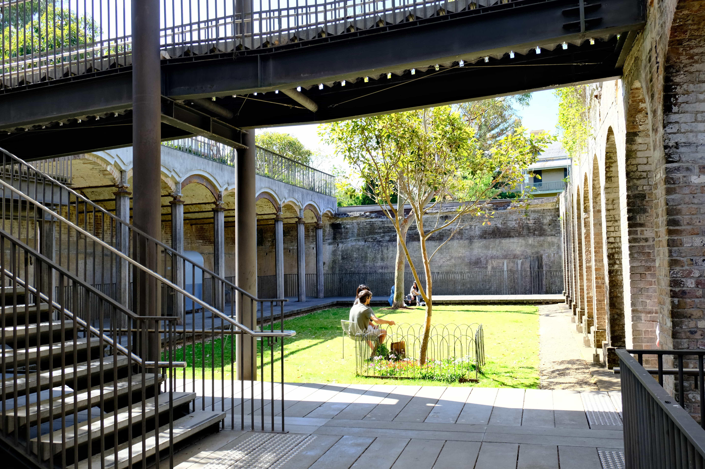

Bus Stops Close By
The Gardens is accessible by several bus lines, making it convenient for visitors traveling by public transport. Key bus routes stopping near the Gardens include: 333, 352, and 440 lines.
The park is comprised of two levels. The street level is accessible at all times but the lower chambers, accessible by an elevator, are only open during daylight hours.

The Gardens is accessible by several bus lines, making it convenient for visitors traveling by public transport. Key bus routes stopping near the Gardens include: 333, 352, and 440 lines.
The Gardens feature a sunken garden, alongside preserved heritage items like brick arches that reflect its historical significance as a 19th-century water reservoir.
The Gardens offers a variety of seating options, including deck chairs and landscaped seating areas. These spaces provide visitors with comfortable spots to relax and enjoy the garden's tranquil environment.
The Gardens feature both open and enclosed grass lawns. The open lawns provide spacious areas for recreational activities, while the enclosed lawns offer a more intimate setting.